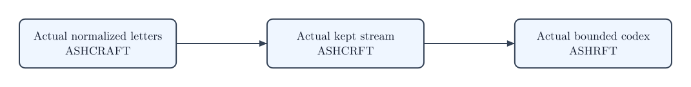
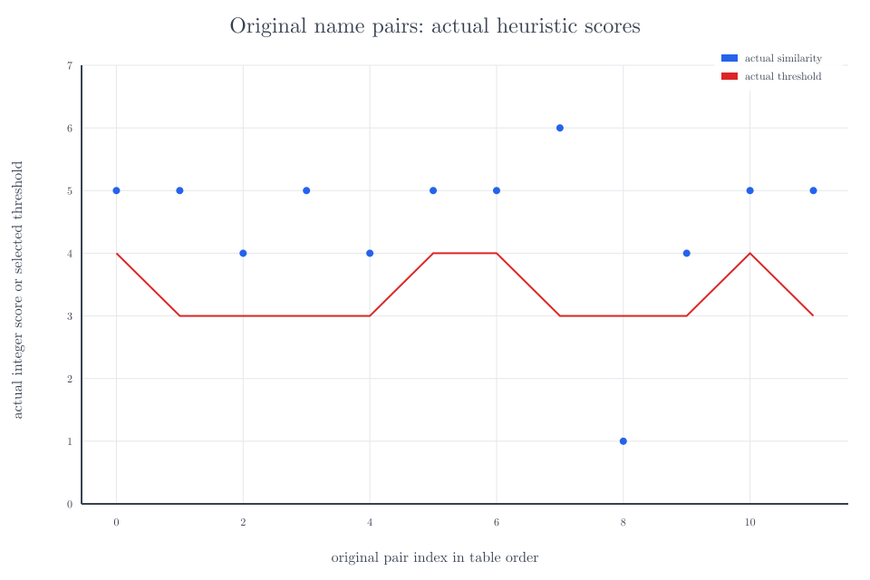
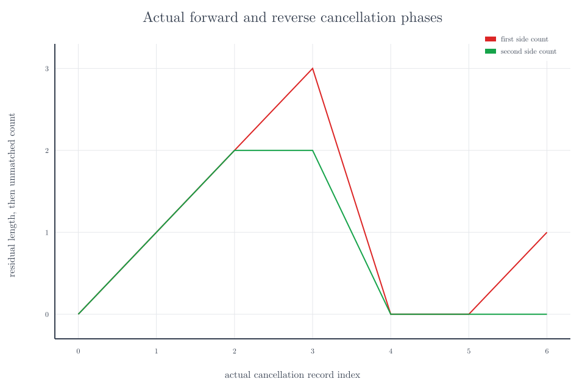
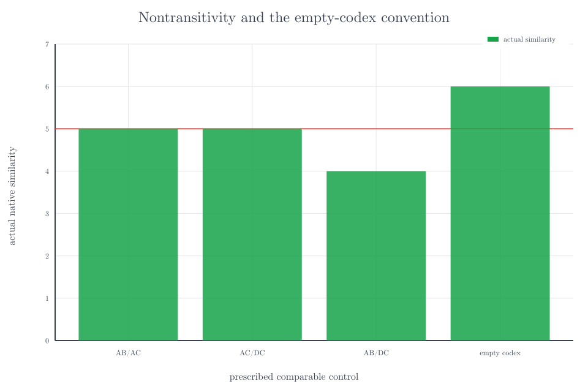

Match Rating name comparison
Abstract
Comparing name spellings requires a rule for compressing letters and judging their remaining differences. The native Match Rating Approach produces bounded codexes, cancels aligned letters from both ends and compares an integer similarity with a length-dependent threshold. We expose actual producing decisions, retain the original twelve name pairs, and show why heuristic acceptance is neither proof of identity nor a transitive equivalence relation.
Specify the native codex rules
Process the original bytes in order. Ignore spaces and nonalphabetic bytes under the active C locale, uppercase alphabetic bytes, keep the first letter, then keep a consonant only if it differs from the preceding alphabetic source letter. Even an omitted vowel updates that previous-letter state. The retained implementation therefore encodes Babab as BBB: it does not run a separate duplicate-collapse pass after deleting vowels. This detail matters when comparing MRA variants.
If the kept stream has at most six letters, return it; otherwise concatenate its first three and last three. The native analysis exposes actual normalized letters, actual kept stream and final codex from that one loop. These are byte-oriented ctype operations, not UTF-8 accent normalization or a language-independent pronunciation model. The examples use ASCII letters under the normal C locale.
A tiny actual filter and trim
Ashcraft produces normalized ASHCRAFT, kept stream ASHCRFT and final codex ASHRFT. The table reads each actual raw-byte decision, including previous-letter state and the real kept-stream length before/after that byte. The diagram reads actual phase strings.
#include <dm/dm.hpp>
int main() {
std::filesystem::create_directories("build");
auto t = dm::algorithms::match_rating_codex_trace("Ashcraft");
std::print("| actual raw index | raw byte | actual uppercase byte | previous alphabetic byte | kept | " "kept length before | kept length after |\n| ---: | ---: | ---: | ---: | --- | ---: | ---: " "|\n");
for (auto &s : t.steps)
std::print("| {} | {} | {} | {} | {} | {} | {} |\n", s.index,
unsigned(s.raw), unsigned(s.upper), unsigned(s.previous),
s.kept, s.before, s.after);
dm::graphics::Diagram d;
d.node("normal", {0, 0},
std::format("Actual normalized letters\n{}", t.analysis.normalized)).node("kept", {6, 0}, std::format("Actual kept stream\n{}", t.analysis.stripped)).node("trim", {12, 0}, std::format("Actual bounded codex\n{}", t.analysis.codex)).edge("normal", "kept").edge("kept", "trim");
d.save_svg("build/match_rating_tiny.svg");
}| actual raw index | raw byte | actual uppercase byte | previous alphabetic byte | kept | kept length before | kept length after |
|---|---|---|---|---|---|---|
| 0 | 65 | 65 | 0 | true | 0 | 1 |
| 1 | 115 | 83 | 65 | true | 1 | 2 |
| 2 | 104 | 72 | 83 | true | 2 | 3 |
| 3 | 99 | 67 | 72 | true | 3 | 4 |
| 4 | 114 | 82 | 67 | true | 4 | 5 |
| 5 | 97 | 65 | 82 | false | 5 | 5 |
| 6 | 102 | 70 | 65 | true | 5 | 6 |
| 7 | 116 | 84 | 70 | true | 6 | 7 |

Derive the pair score and retain the original examples
Let the two final codex lengths be l1,l2. If their absolute difference is at least three, return not comparable with no cancellation pass. Otherwise the minimum is5 for combined length up to4,4 up to7,3 up to11 and2 for12. The native convention includes combined length zero in the first case.
Align the codexes from the left. Equal positions cancel; unequal existing letters append to each side’s residual. Align those residuals from the right, cancel equal positions and count remaining unequal existing letters u1,u2. The similarity is6−max(u1,u2); acceptance requires it to reach the selected minimum. Missing letters are absent positions, not alphabetic zero bytes. Swapping inputs swaps residuals/counts while preserving threshold and maximum, proving symmetry.
The original twelve pairs are mechanism fixtures without ground-truth person labels. Their plotted similarities are not estimates of identity probability or measured classification accuracy. Not-comparable pairs are shown in the table but omitted from the score plot.
#include <dm/dm.hpp>
int main() {
std::filesystem::create_directories("build");
auto pairs = dm::algorithms::match_rating_demo_pairs();
std::vector<double> x, score, threshold;
std::print("| original pair index | first name | second name | actual first codex | actual second codex " "| comparable | similarity | minimum | heuristic match |\n| ---: | --- | --- | --- | --- | " "--- | ---: | ---: | --- |\n");
for (std::size_t i = 0; i < pairs.size(); ++i) {
auto a =
dm::algorithms::match_rating_analyze(pairs[i].first, pairs[i].second);
auto &r = a.result;
std::print("| {} | {} | {} | {} | {} | {} | {} | {} | {} |\n", i,
pairs[i].first, pairs[i].second, a.codex_a, a.codex_b,
r.comparable, r.similarity, r.min_rating, r.match);
if (r.comparable) {
x.push_back(i);
score.push_back(r.similarity);
threshold.push_back(r.min_rating);
}
}
auto p = dm::graphics::RPlot::create();
p.points(x, score, "actual similarity");
p.line(x, threshold, "actual threshold", {220, 38, 38});
p.y_limits(0, 7).x_label("original pair index in table order").y_label(
"actual integer score or selected threshold").title(
"Original name pairs: actual heuristic scores").save_svg(
"build/match_rating_original.svg");
}| original pair index | first name | second name | actual first codex | actual second codex | comparable | similarity | minimum | heuristic match |
|---|---|---|---|---|---|---|---|---|
| 0 | Byrne | Boern | BYRN | BRN | true | 5 | 4 | true |
| 1 | Smith | Smyth | SMTH | SMYTH | true | 5 | 3 | true |
| 2 | Catherine | Kathryn | CTHRN | KTHRYN | true | 4 | 3 | true |
| 3 | Robert | Rupert | RBRT | RPRT | true | 5 | 3 | true |
| 4 | Steven | Stephen | STVN | STPHN | true | 4 | 3 | true |
| 5 | Karen | Caren | KRN | CRN | true | 5 | 4 | true |
| 6 | Sean | Shaun | SN | SHN | true | 5 | 4 | true |
| 7 | Margaret | Marguerite | MRGRT | MRGRT | true | 6 | 3 | true |
| 8 | Alice | Zachary | ALC | ZCHRY | true | 1 | 3 | false |
| 9 | Jackson | Johnson | JCKSN | JHNSN | true | 4 | 3 | true |
| 10 | Baker | Barker | BKR | BRKR | true | 5 | 4 | true |
| 11 | Nelson | Wilson | NLSN | WLSN | true | 5 | 3 | true |

Inspect the real two-pass cancellation
Byrne versus Boern exposes why reverse alignment matters. The original codexes differ in length, so unequal left-aligned residuals can still share right-aligned suffix letters. The native trace records every actual compared pair, equality decision and count transition. Byte values are printed as unsigned integers to keep absent zero and literal letters unambiguous in MEP output.
#include <dm/dm.hpp>
int main() {
std::filesystem::create_directories("build");
auto t = dm::algorithms::match_rating_trace("Byrne", "Boern");
std::print("Actual codexes `{}` and `{}`; actual forward residuals `{}` and `{}`.\n\n| actual reverse " "pass | offset from active end | first byte0 if absent | second byte0 if absent | equal | " "first count before | first count after | second count before | second count after |\n| --- " "| ---: | ---: | ---: | --- | ---: | ---: | ---: | ---: |\n",
t.analysis.codex_a, t.analysis.codex_b, t.analysis.residual_a,
t.analysis.residual_b);
std::vector<double> x, a, b;
for (std::size_t i = 0; i < t.cancellations.size(); ++i) {
auto &s = t.cancellations[i];
std::print("| {} | {} | {} | {} | {} | {} | {} | {} | {} |\n",
s.reverse, s.index, unsigned(s.a), unsigned(s.b), s.equal,
s.before_a, s.after_a, s.before_b, s.after_b);
x.push_back(i);
a.push_back(s.after_a);
b.push_back(s.after_b);
}
auto p = dm::graphics::RPlot::create();
p.line(x, a, "first side count");
p.line(x, b, "second side count", {22, 163, 74});
p.x_label("actual cancellation record index").y_label(
"residual length, then unmatched count").title("Actual forward and reverse cancellation phases").save_svg("build/match_rating_cancellation.svg");
}Actual codexes BYRN and BRN; actual forward residuals YRN and RN.
| actual reverse pass | offset from active end | first byte0 if absent | second byte0 if absent | equal | first count before | first count after | second count before | second count after |
|---|---|---|---|---|---|---|---|---|
| false | 0 | 66 | 66 | true | 0 | 0 | 0 | 0 |
| false | 1 | 89 | 82 | false | 0 | 1 | 0 | 1 |
| false | 2 | 82 | 78 | false | 1 | 2 | 1 | 2 |
| false | 3 | 78 | 0 | false | 2 | 3 | 2 | 2 |
| true | 0 | 78 | 78 | true | 0 | 0 | 0 | 0 |
| true | 1 | 82 | 82 | true | 0 | 0 | 0 | 0 |
| true | 2 | 89 | 0 | false | 0 | 1 | 0 | 0 |

Limits, edge cases and honest accounting
The threshold makes acceptance a heuristic relation rather than an equivalence relation. The artificial spellings AB and AC match; AC and DC match; AB and DC do not. Thus transitivity cannot be assumed when constructing identity groups. The retained empty-codex convention considers two empty codexes comparable with similarity6 and minimum5, yielding match=true even for two nonletter inputs. Applications needing meaningful names must enforce their own input policy; the native convention is exposed rather than silently reinterpreted as a valid identity.
Code preprocessing is O(N+M) time/storage; both codexes are bounded by six letters, so subsequent cancellation is constant-size. Full kept streams and actual normalized letters can be long even though final codexes are short. Case/letter classification follows the active C locale; Unicode normalization and multilingual pronunciation are outside this byte contract.
Complete codex capture counts original bytes, one actual decision record per byte and each actual normalized/kept/final-codex character. Pair capture shares one budget across both codex executions, every actual cancellation record and every forward residual character. Returned phase copies are not counted again. Default complete limit is one million; zero disables it. Fields, capacities, runtime copies and bytes are excluded. Admission precedes each actual record/string contribution, and failure returns no prefix.
#include <dm/dm.hpp>
int main() {
std::filesystem::create_directories("build");
std::vector<std::pair<std::string, std::string>> pairs{{"AB", "AC"},
{"AC", "DC"},
{"AB", "DC"},
{"123", "---"},
{"A", "BCDFGH"}};
std::vector<std::string> labels;
std::vector<double> scores;
std::print("| prescribed first input | second input | comparable | actual similarity | actual minimum | " "native heuristic match | actual captured entries |\n| --- | --- | --- | ---: | ---: | --- | " "---: |\n");
for (std::size_t i = 0; i < pairs.size(); ++i) {
auto t =
dm::algorithms::match_rating_trace(pairs[i].first, pairs[i].second);
auto &r = t.analysis.result;
std::print("| {} | {} | {} | {} | {} | {} | {} |\n", pairs[i].first,
pairs[i].second, r.comparable, r.similarity, r.min_rating,
r.match, t.captured_entries);
if (r.comparable) {
labels.push_back(i == 3 ? "empty codex"
: pairs[i].first + "/" + pairs[i].second);
scores.push_back(r.similarity);
}
}
auto p = dm::graphics::RPlot::barplot(scores, labels, "actual similarity");
p.abline_h(5, {220, 38, 38}, 1.5).y_limits(0, 7).x_label(
"prescribed comparable control").y_label("actual native similarity").title("Nontransitivity and the empty-codex convention").save_svg("build/match_rating_controls.svg");
}| prescribed first input | second input | comparable | actual similarity | actual minimum | native heuristic match | actual captured entries |
|---|---|---|---|---|---|---|
| AB | AC | true | 5 | 5 | true | 25 |
| AC | DC | true | 5 | 5 | true | 25 |
| AB | DC | true | 4 | 5 | false | 28 |
| 123 | --- | true | 6 | 5 | true | 12 |
| A | BCDFGH | false | 0 | 0 | false | 35 |

Verification and references
Native tests exhaust19531 short byte words, checking actual codex
phases/decisions/counts against an independent ASCII reference. They compare5000
generated name pairs with independent cancellation, inspect every real
forward/reverse record and test symmetry. Original twelve pairs, all
length-threshold combinations, vowel-separated duplicate consonants, the empty
convention, explicit nontransitivity, NUL, ownership and exact shared quota
boundaries are retained. The shared ten-report batch passes 71 CTest cases, 29
directly instrumented ASan/UBSan cases, 130 compiled and executed public
examples, 598/598 scoped documentation definitions and ten representative
hovers. Independent Python arbitrary-precision, hashlib, sorted-window, RNG,
polynomial, graph and full-assignment references verify 224,229 actual records.
Frozen comparisons preserve ordinary legacy outputs, including selected clique
identities, original density graphs and memetic partitions. Twelve checkout
headers and twelve identically installed headers compile independently; an
installed-header native consumer links and runs. All four complete programs and
all four native figures pass execution and visual review, and HTML/Markdown
exports preserve computed results and identical image bytes. Receipts:
build/mepml-conversion/batch-224-233/.
The Apache Commons Codec MRA API identifies the Western Airlines1977 method. This report specifies datamunge’s actual byte/filter/cancellation conventions explicitly rather than claiming all MRA implementations agree on preprocessing or invalid/empty input. No unexecuted corpus-accuracy claim from the legacy report is carried forward.